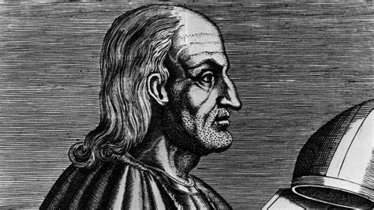
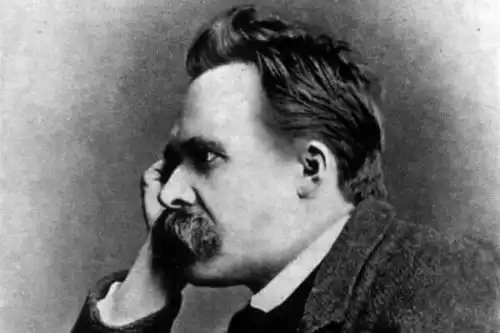
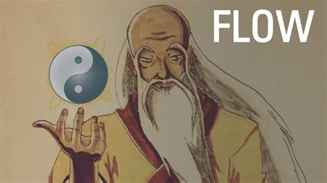

Du hast wahrscheinlich schon vom pythagoreischen Theorem gehört, das die Seitenverhältnisse im rechtwinkligen Dreieck beschreibt. Der Pythagoreismus war jedoch im 6. Jahrhundert v. Chr. eine grundlegende philosophische und religiöse Bewegung
Pythagoras von Samos hat sie begründet. Er galt als der erste reine Mathematiker und zählt bis heute zu den wichtigsten der Geschichte. Er vertrat den Standpunkt, dass Religion und Wissenschaft nicht zwei getrennte Einheiten seien, sondern zwei untrennbare Akteure des gleichen Lebens. Er umgab sich mit Astrologen, Musikern, Mathematikern und Philosophen und war fest davon überzeugt, dass alle Dinge im Wesentlichen durch Zahlen zu erklären seien. Er nahm an, die Natur folge numerischen Regeln. Aber die seien eine mathematisch geführte Theorie war, haftete ihr gleichzeitig etwas mystisches an. Das religiöse Bezugssymbol war das Fünfeck oder Pentagramm, das die Anhänger des Pythagoreismus “Gesundheit” nannten. Damals benutzten sie es als geheimes Zeichen, um sich gegenseitig zu erkennen weiterlesen

Epikur von Samos begründete die nach ihm benannte philosophische Bewegung im 4. Jahrhundert v. Chr., und sie wurde von seinen Anhängern, den Epikureern, weitergeführt. Die Maxime seiner Theorie war die Suche nach Glück durch das Streben nach Vergnügen. Die Epikureern verstanden beide Konzepte, Freude und Glück, als die Abwesenheit von Schmerz und jeglicher Art von Leiden.
Um dieses Glück zu erreichen, haben sie drei Arten von Freuden angestrebt, die es ermöglichen sollten, den Zustand der Ataraxie zu erreichen: den Zustand der Ruhe, die Abwesenheit von Störungen und das perfekte Gleichgewicht zwischen Geist und Körper
Epikur erklärte, dass es Gott nicht gebe. Dem Volke nach wäre Gott wohl gut und allmächtig, aber Schlechtes geschehe den Menschen immer wieder, sogar den guten Menschen. Warum? Entweder ist Gott nicht gut, weil er das Schlechte zulässt. Oder er ist nicht allmächtig, weil er nicht in der Lage ist, sie zu verhindern. In beiden Fällen hebt seine Schlussfolgerung die Existenz Gottes auf. weiterlesen

Obwohl sie nicht zu den umstrittensten gehört, ist die Scholastik aufgrund ihrer Heterogenität eine der interessantesten philosophischen Theorien. Sie ging aus griechisch-lateinischen, arabischen und jüdischen Schulen hervor und wurde vom mittelalterlichen Denken geprägt. Die zentrale Idee war die Unterordnung der Vernunft unter den Glauben und die Koordination zwischen den beiden.
Cogito ergo sum. Ich denke, also bin ich. Mit diesem Satz von René Descartes können wir eine der bekanntesten philosophischen Theorien zusammenfassen: den Rationalismus. Er lehrt, dass die Vernunft die Quelle der Wahrheit sei und der einzige Weg, auf dem sie gefunden werden könne. Sie lehnt daher jedes Glaubensdogma ab und spricht gegen die Welt des Unbewussten, die sie für zweifelhaft hält.
Das Leben dieses französischen Mathematikers war ziemlich eigenartig. Wegen gesundheitlicher Probleme als Kind musste er täglich viele Stunden im Bett liegen. Dies gab ihm die Möglichkeit, über die Welt nachzudenken und seine Theorien zu postulieren. Und einige Jahre später legte er den Grundstein für die nach ihm benannte philosophische Bewegung. Europa war im siebzehnten und achtzehnten Jahrhundert bereits recht weit entwickelt und der Rationalismus stellte den methodischen Zweifel als einzigen Weg zur Erkenntnis dar.
Descartes selbst, zusammen mit anderen Autoren wie Berkeley, Kant, Fichte (subjektiver Idealismus) oder Leibniz und Hegel (objektiver Idealismus) waren einige der wichtigsten Vertreter dieser Bewegung. Diese ist eine der philosophischen Theorien, auf die wir heute noch oft zurückgreifen. Wie oft haben wir zu jemandem gesagt, er sei zu idealistisch? Aber wissen wir wirklich, was das bedeutet? Es hat nur sehr wenig mit der Realität zu tun, denn der Idealismus betrachtet die Welt und das Leben als perfekte Modelle der Harmonie. Idealisten halten alles für besser, als es tatsächlich ist. Sie neigen dazu, Dinge mit Eigenschaften zu versehen und als perfekt zu betrachten, zu “idealisieren”
“Gott ist tot.” Mit diesem Satz konzeptualisiert Nietzsche eine seiner bittersten Satiren über die Mentalität des 19. Jahrhunderts. Er führte auch eine umfassende Kritik der westlichen Gesellschaft durch, durch die Genealogie der Konzepte, die sie zusammenhalten.
Für diesen Philosophen, Dichter, Musiker und deutschen Philologen steckte die Welt in einem tiefen Nihilismus. Sie musste diesen überwinden, wenn sie nicht zu Ende gehen wollte. Er bezog sich dabei auf die Abwertung höchster Werte. Dies sei ein historischer Prozess, der versuche, “das, was früher als höchste Werte galt, unwirksam zu machen”, sagte Nietzsche. Viele spätere Denker werfen ihm vor, seinen eigenen Vorstellungen zu widersprechen. Er verteidigte sich, indem er argumentierte, dass er verschiedene Standpunkte in seinen Werken benutzte, um den Leser herauszufordern, mehrere Facetten desselben Themas zu betrachten
Lao Tse war ein Zeitgenosse von Konfuzius, Buddha und Pythagoras. Allerdings wissen wir nichts über seine Geburt und seinen Tod. Der Taoismus ist eine Mischung aus zwei Ideogrammen: Kopf und Marsch. Deshalb interpretieren wir ihn heute als den Mann, der voranschreitet, der bewusst geht, der seinen eigenen Weg findet. Die Bedeutung des Wortes Tao hängt vom Kontext ab und es erscheint in philosophischen, religiösen, kosmologischen oder moralischen Texten. Sie basiert auf Dynamik und Dualität, auf der Idee, dass sich Gegensätze wie Yin und Yang ergänzen. “Wer rennt, wird mit dem Netz gefangen, wer schwimmt mit einem Haken, wer fliegt mit einem Bogen. Was den Drachen betrifft, der vom Wind und den Wolken in den Himmel ragt, so weiß ich nicht, wie er gefangen werden kann. Ich habe Lao Tse gesehen; heute habe ich einen Drachen gesehen.“
